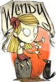

Don't Starve
Dieser Artikel wurde für die folgenden Ubuntu-Versionen getestet:
Ubuntu 14.04 Trusty Tahr
Zum Verständnis dieses Artikels sind folgende Seiten hilfreich:
Don't Starve  ist ein Spiel voller Magie und Wissenschaft. Ein Dämon nimmt den Wissenschaftler Wilson gefangen und sperrt ihn in eine mysteriöse Wildnis. Hier muss er lernen, seine Umwelt zu nutzen und Kontakte mit den Bewohnern zu pflegen, um jemals auf Rückkehr hoffen zu können. Eine Welt voller Gefahren, Überraschungen und Abenteuer wartet auf den Spieler. Es gilt Ressourcen zu sammeln und Forschungsapparate zu nutzen, um Fallen, Waffen, Rüstungen und Werkzeuge zu erfinden bzw. zu fertigen. Wird Willow überleben?
ist ein Spiel voller Magie und Wissenschaft. Ein Dämon nimmt den Wissenschaftler Wilson gefangen und sperrt ihn in eine mysteriöse Wildnis. Hier muss er lernen, seine Umwelt zu nutzen und Kontakte mit den Bewohnern zu pflegen, um jemals auf Rückkehr hoffen zu können. Eine Welt voller Gefahren, Überraschungen und Abenteuer wartet auf den Spieler. Es gilt Ressourcen zu sammeln und Forschungsapparate zu nutzen, um Fallen, Waffen, Rüstungen und Werkzeuge zu erfinden bzw. zu fertigen. Wird Willow überleben?
| Menü | Spielszene |
Installation¶
Herstellerseite¶
Nach dem Erwerb des Spiels auf der Herstellerseite , über den Humble Store, erhält man einen Schlüssel für Steam und kann es nach Freischaltung des Codes installieren.
Steam¶
Über die Vertriebsplattform oder den Client kann das Spiel erworben und über letzteren installiert [1] werden.
Bedienung¶
Spielcharaktere¶
Im Spiel gibt es eine Vielzahl von Charakteren, welche entweder durch Erfahrungspunkte freigespielt werden können oder durch Spielaktionen zur Verfügung stehen.
| Wilson (Hauptcharakter) |
| Willow (160 Punkte / 8 Tage) |
|  |
| Wendy (320 Punkte / 16 Tage) |
| Wolfgang (640 Punkte / 32 Tage) |
| WX-78 (950 Punkte / 48 Tage) |
| Mrs. Wickerbottom (1280 Punkte / 64 Tage) |
| Wes (Maxwell Statue) |
| Maxwell (Nightmare Throne) |
Maxwell und Wes sind im Adventure Mode zu finden.
Handbuch¶
Für das Spiel existiert kein Handbuch. Jedoch liefert das Wiki detaillierte Informationen. Ein Starter Guide erklärt die Grundbedienung. Zusätzlich findet man z.B. unter Axe Information, welche Materialien erforderlich sind, um eine Axt herzustellen.
Einstellungen¶
Sichtfeld¶
Um das Sichtfeld zu ändern, im Installationsverzeichnis in den Ordner ~/.local/share/Steam/SteamApps/common/dont_starve/data/scripts/cameras wechseln und die Datei followcamera.lua bearbeiten [2]. Die Zeile
self.fov = 35
den gewünschten Anforderungen entsprechend ändern. 35 durch den gewünschten Wert ersetzen. Für ein größeres Sichtfeld ist ein höherer Wert einzusetzen.
Hinweis:
Zu große Abweichungen vom Grundwert 35 können zu Darstellungsfehlern führen.
Tastenbelegung¶
Um die Belegung der Tasten zu ändern, im Installationsverzeichnis unter ~/.local/share/Steam/SteamApps/common/dont_starve/data/scripts/components die Datei playercontroller.lua im Editor [2] den Wünschen entsprechend ändern.
Hinweis:
Fehlerhaft vorgenommene Änderungen können dazu führen, dass das Spiel nicht richtig bedient werden kann. Es empfiehlt sich vor der Änderung eine Kopie der Originaldatei  zu erstellen.
zu erstellen.
Modifikationen¶
Aus dem Forum (Forumdiskussionen ) die gewünschte Modifikation herunterladen und im Ordner ~/.local/share/Steam/SteamApps/common/dont_starve/mods entpacken [3]. Nun die Datei modsettings.lua bearbeiten [2] und eine neue Zeile hinzufügen:
ModManager:AddMod("NAME_DES_MODS")Beispiele¶
| Mods | ||
| Name / Link | Beschreibung | modsettings.lua |
| Camp Res | Basically an easymode mod. Removes the need for Meat Effigy and Amulets. Resurrects you at your Fire Pit. You still drop all your inventory on death. | ModManager:AddMod("campres") |
| Craftable Uncraftables | Mit bisher ungenutzten Ressourcen weitere Dinge von Hand fertigen. | ModManager:AddMod("Uncraftable Craftables") |
| Infinite Tools | Werkzeuge | ModManager:AddMod("InfiniteTools") |
| Potions Mod | Verschiedene Zaubertränke hinzufügen. | ModManager:AddMod("PotionsMod_Health") |
| Language Packs | Sprachpakete (Nach ~/.local/share/Steam/SteamApps/common/dont_starve/data/scripts/languages kopieren) | |
| Custom Maps | Karten | |
Hinweis:
Bei einigen Modifikationen sind zusätzliche Informationen auf der Downloadseite zu beachten.
Tastenkürzel¶
| Tastenkürzel | |
| Taste(n) | Funktion |
| W + A + S + D | Steuerung |
| Q / E | Blickwinkel um 90º verändern |
| ↑ / ↓ | Zoom |
| ⇧ | Untersuchen |
| Strg | Angriff / Aufnehmen ... |
| Aktion ausführen | |
| + Strg | Angriff auf nichtfeindliche Charaktere ausführen |
| 1 - 0 / + / - | Inventar aufrufen |
| Tab ⇆ | Karte |
| Esc | Menü |
| ⌫ | Debug Rendering |
| Strg + P | Kamera an Ort und Stelle einfrieren |
| Strg + H | GUI ein-/ausblenden |

Infobox¶
| Don't Starve | |
| Genre: | Survival-Adventure |
| Sprache: | |
| Veröffentlichung: | 2013 |
| Publisher: | Klei Entertainment |
| Minimale Systemvoraussetzungen: | 1.7 GHz Prozessor / 1GB RAM / 256MB Grafikkarte (Radeon HD 5450) / 500MB Festplattenspeicher |
| Medien: | Download |
| Strichcode / EAN / GTIN: | - |
| Läuft mit: | nativ |
- Erstellt mit Inyoka
-
 2004 – 2017 ubuntuusers.de • Einige Rechte vorbehalten
2004 – 2017 ubuntuusers.de • Einige Rechte vorbehalten
Lizenz • Kontakt • Datenschutz • Impressum • Serverstatus -
Serverhousing gespendet von